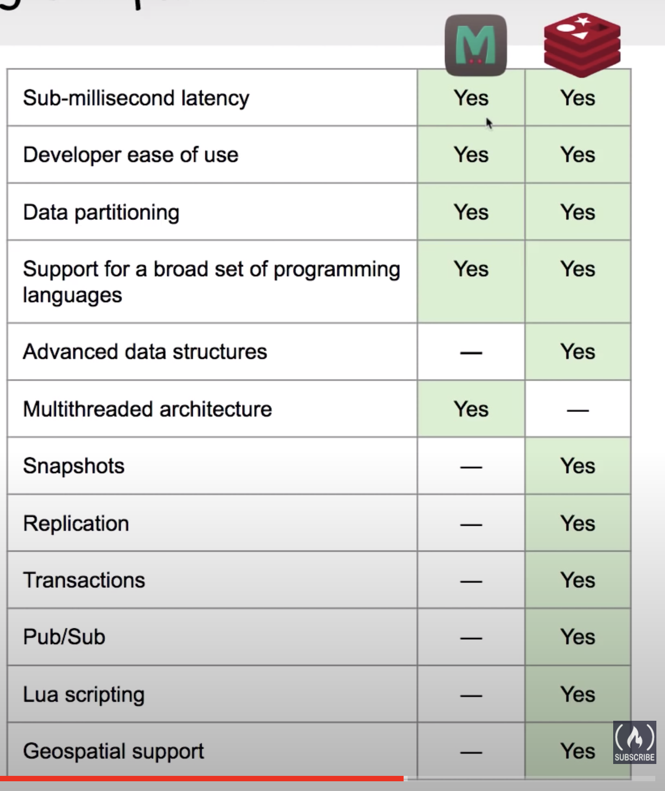
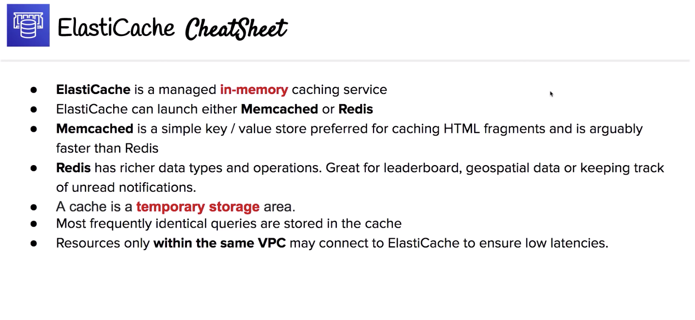

The current note and all other notes titled “AWS SAA Test prep” are based on the 10-hour free tutorial hosted by Andrew Brown and published by freeCodeCamp, which is accessible on YouTube through this link. Special thanks for the maker and publisher of the awesome video!
Managed caching service which either runs Redis or Memcachedd
In-Memory Data Store
Caching
Caching is the process of storing data in a cache.
A cache is a temporary storage area. Caches are optimized for fast retrieval with the trade off that data is not durable.
In-Memory Data Store
When data is stored In-Memory (think of RAM). The trade off is high volatility (low durability, risk of data loss), but access to data is very fast.
Introduction to ElastiCache
Deploy, run and scale popular open-source compatible in-memory data stores.
Frequent identical queries are stored in cache.
ElastiCache is only accessible to resource operating with the same VPC to ensure low latency.
Memcached and Redis
Two options for ElastiCache:
Memcached
Preferred for caching HTML fragments.
Memcached is a simple key/value store.
Simple and very fast.
Redis
Can perform many different operations on your data.
Very good for leaderboards, geo-spatial data and keep track of unread notification data.
Very fast, but arguably not as fast as Redis.

